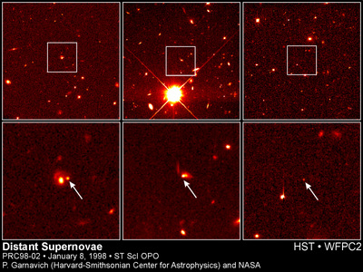

Dark Energy is a hypothetical form of energy that exerts a negative, repulsive pressure, behaving like the opposite of gravity. It has been hypothesised to account for the observational properties of distant type Ia supernovae, which show the universe going through an accelerated period of expansion. Like Dark Matter, Dark Energy is not directly observed, but rather inferred from observations of gravitational interactions between astronomical objects.
Dark Energy makes up 72% of the total mass-energy density of the universe. The other dominant contributor is Dark Matter, and a small amount is due to atoms or baryonic matter.
In 1998 two teams of astronomers announced that distant, z~1 type Ia supernovae were slightly too faint than model predictions of an expanding (yet slowing) universe. To be fainter, the supernovae must be farther away and this requires that the expansion of the Universe was slower in the past. Both teams agreed that the universe is going through a phase of accelerated expansion. Dark Energy was invoked to drive this acceleration.
In the early part of the 20th century Albert Einstein had invoked a ‘cosmological constant’, (usually symbolized by the Greek letter lambda, Λ). It was a vacuum energy of empty space, which kept the universe (predicted by his field equations of the General Theory of Relativity) static, rather than contracting or expanding. It provided a way of balancing the gravitational contraction caused by matter. Once the universe was observed to be expanding Einstein hastily removed his cosmological constant. However if dark energy is described by something similar to Einstein’s cosmological constant it doesn’t just balance gravity to keep a static universe but has negative pressure to cause the expansion to accelerate.
Other types of dark energy have been proposed, including a cosmic field associated with inflation and a different, low-energy field dubbed “quintessence”.
It is thought that the very early universe also went through a period of rapid expansion, called inflation. Inflation, occurring about 10−36 seconds after the Big Bang, acted to smooth out the universe and make it geometrically flat. If the density of the universe exactly equals the critical density, then the geometry of the universe is flat like a sheet of paper. For a matter dominated Universe the critical density (equivalent to about 6 protons per m3) sits exactly between the density required for a heavy universe that will eventually collapse, and a density required for a light universe that will expand forever. When astronomers measure the amount of matter and energy in the universe today they only come up with about ~30% of what is needed to make the universe flat. The addition of Dark Energy to the mass-energy budget makes the universe flat. The simplest version of inflation, predicts that the density of the universe is very close to the critical density.
The WMAP spacecraft has measured the geometry of the universe. If the universe was flat, the brightest cosmic microwave background fluctuations (or “spots”) would be about 1 degree across. WMAP has confirmed this spot size with very high accuracy. We now know that the universe is flat with only a 2% margin of error.

Credit: P. Garnavich (Harvard-Smithsonian Center for Astrophysics) and the High-z Supernova Search Team and NASA
Quintessence is from the ancient Greeks who used the term to describe a mysterious ‘fifth element’ – in addition to air, earth, fire and water. Whereas the cosmological constant is a specific form of energy, a vacuum energy, quintessence is dynamic, time-evolving and a spatially dependent form of energy. It is a quantum field with kinetic and potential energy.
Depending on the ratio of the two energies and the pressure they exert, quintessence can either attract or repel. It has an equation of state (relating its pressure p and density ρ) of p = wρ, where w is equal to the equation of state of the energy component dominating the universe. If w undergoes a transition to less than -1/3 this initiates accelerated expansion. By contrast, a cosmological constant is static, with a fixed energy density and w = −1.
There are a number of ongoing programs aimed at discovering more about Dark Energy. One such study involves the measurement of Baryonic Acoustic Oscillations (BAO).
Alternatives to Dark Energy have been proposed. Some scientists have proposed that our Galaxy sits inside a region of low density caused by the passage of a density wave. The Big Bang may have created this large-scale wave in space-time. As this primordial wave moved through the universe, it left behind a low-density ripple several tens of millions of light-years across, in which the Galaxy now resides. Whilst possible, this difference in the properties of space-time would violate the Copernican principle which states that the universe, on large scales is homogenous.